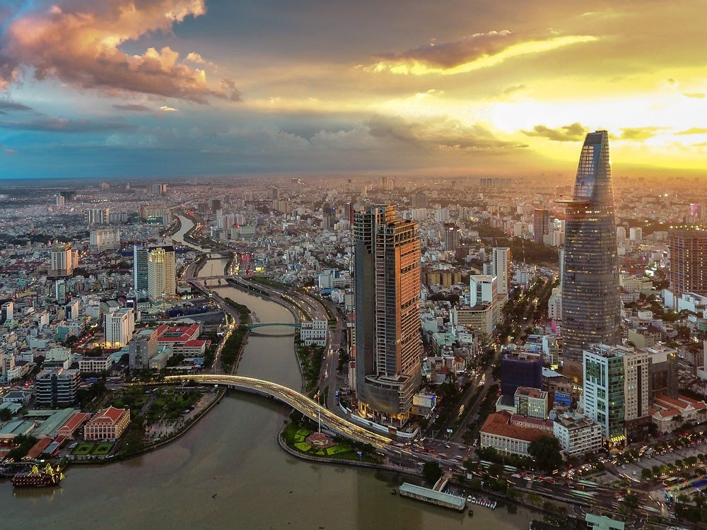
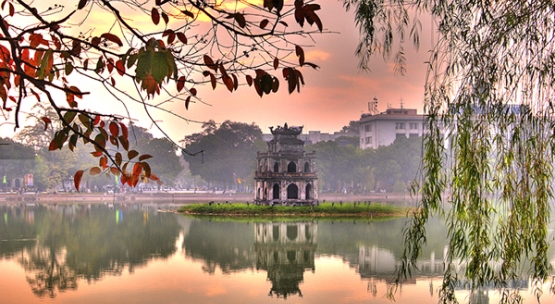

| Places | Short Description |
|---|---|
|  | Welcome to Ho Chi Minh City
Ho Chi Minh City (HCMC) is Vietnam at its most dizzying: a high-octane city of commerce and culture
that
has driven the country forward with its pulsating energy. A chaotic whirl, the city breathes life
and
vitality into all who settle here, and visitors cannot help but be hauled along for the ride. From the finest of hotels to the cheapest of guesthouses, the classiest of restaurants to the tastiest of street stalls, the choicest of boutiques to the scrum of the markets, HCMC is a city of energy and discovery. Wander through timeless alleys to incense-infused temples before negotiating chic designer malls beneath sleek 21st-century skyscrapers. The ghosts of the past live on in buildings that one generation ago witnessed a city in turmoil, but now the real beauty of the former Saigon’s urban collage is the seamless blending of these two worlds into one exciting mass. |
|
|
|
|  | Hanoi, the thousand-year-old cultural capital of Vietnam, is the center of culture and politics of the country with preferential natural landscapes as well as the historical monuments, the intangible cultural heritage such as Ca Tru singing, etc. All of them has created the unique attraction of Hanoi. Since the country innovation, Hanoi tourism has been increasingly developed with a lot of different types of tourism. Hanoi tourism is supported by high quality infrastructure, diversity of hotels from 2 stars to 5 stars, restaurant systems with Asia and Western dishes, etc. Hanoi is the transshipment of international tourists coming to Vietnam. The number of international as well as domestic tourists visiting Hanoi annually increases. However, there are many problems which need to overcome for Hanoi tourism, for example, poor transport systems, traffic chaos, serious environmental pollution due to rapid urbanization and food safety. |
|
|
|
| Contact infomation | |
|---|---|
|
© 2020 Thanh Binh Blog